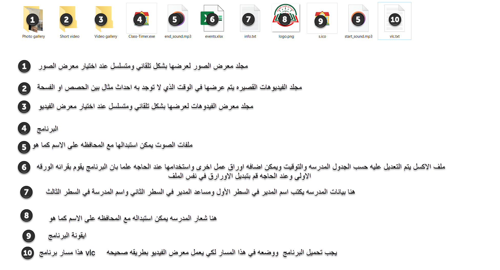
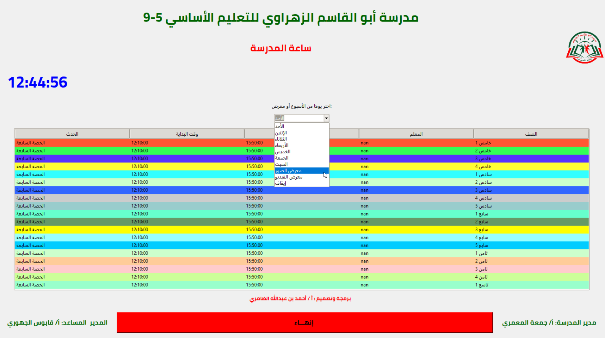

برنامج ساعة المدرسة هو نظام رقمي تفاعلي ذكي يُستخدم لعرض الجدول المدرسي والفعاليات اليومية بطريقة مرئية وصوتية، مع إمكانية تشغيل الصور والفيديوهات تلقائيًا. يهدف البرنامج إلى تنظيم اليوم الدراسي وتحفيز التفاعل داخل المدرسة.
يعتمد البرنامج على لغة Python مع واجهة رسومية بسيطة ومتكاملة. يمكن عرض الأحداث حسب الوقت الفعلي، تشغيل أصوات عند بداية ونهاية الحصص، وإظهار معرض الصور أو الفيديو تلقائيًا. يمكن تعديل بيانات المدرسة والجدول بسهولة من خلال ملفات مرفقة.
 يمكنك تحميل النسخة التنفيذية للبرنامج من الرابط التالي:
تحميل الآن